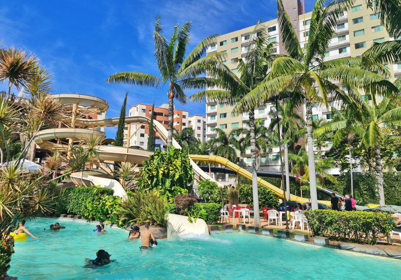
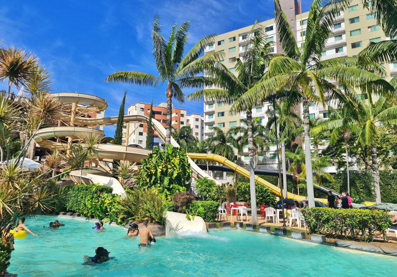

HABILIDADES
Estas são algumas das tecnologias e linguagens com as quais tenho trabalhado.


HOBBIES
Gosto de jogar videogame, assistir filmes e séries, ouvir música, e gosto muito de estudar astronomia. Também curto sair com amigos, ir ao cinema e viajar.
 
